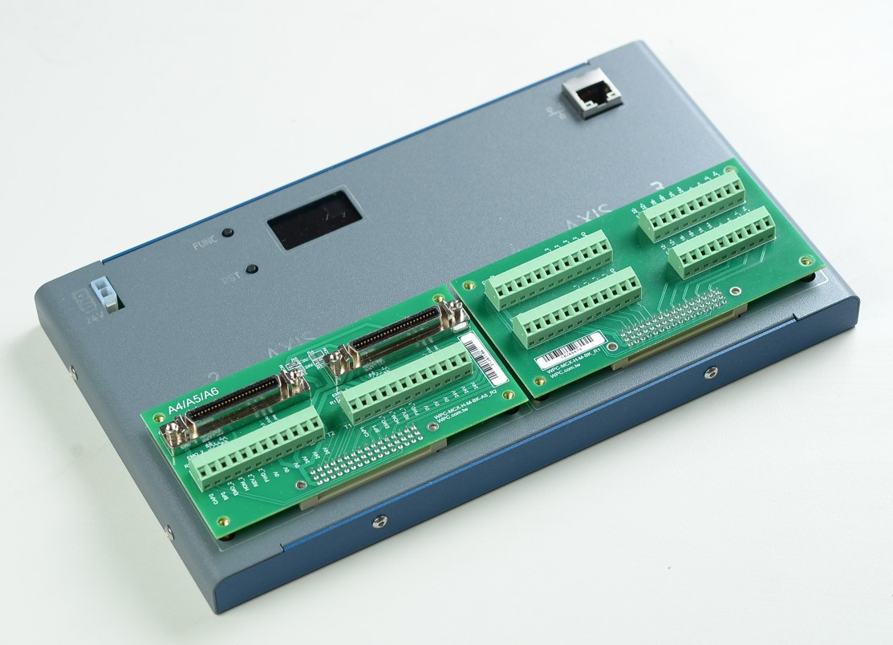
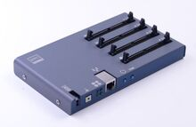
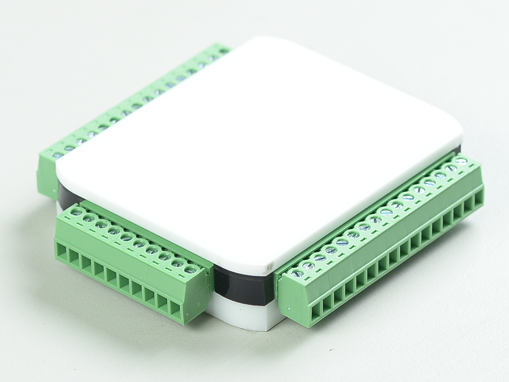
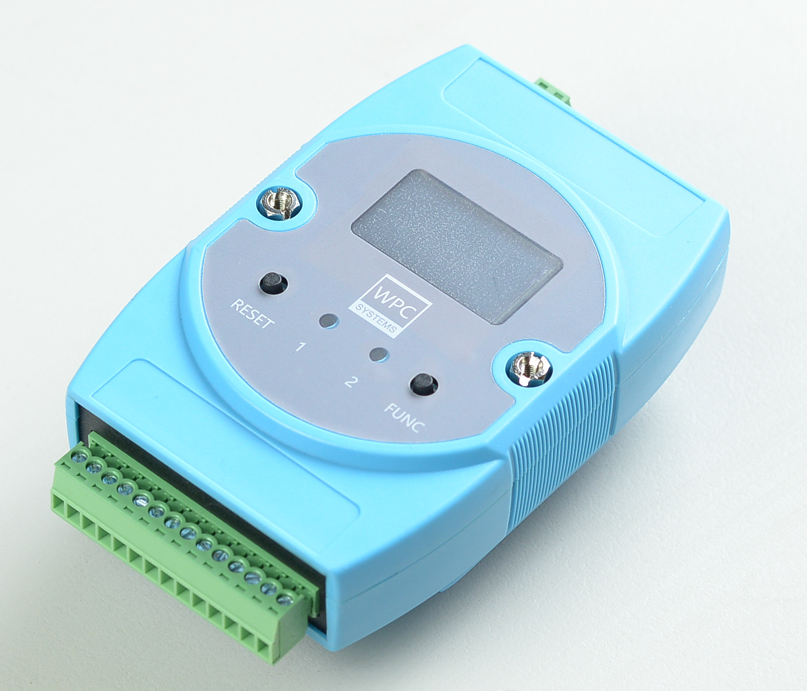
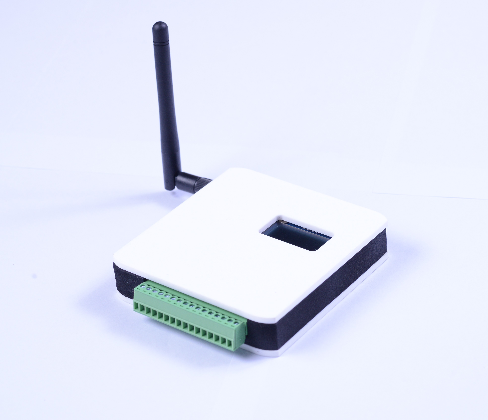

Product Features
| Product | Feature | Photo |
|---|---|---|
| Emotion | Ethernet based motion controller modular inter-connection board：Easy and quick connect to Servo amplifier (Yaskawa, Panasonic, Mitsubishi, Delta...etc) Pulse/Direction or CW/CCW output mode Differential output (Max: 8MPPS) Encoder ABZ input (Max: 12MHz) Break-point / Capture Linear / Circular / helical interpolation / Multi-axes sync move S-Curve |
 |
| STEM | 4-slot IDC-50P 3.3V DIO Support modules: 24ch-24V-DI/ 24ch-24V-DO/ 12-12ch-24V-DIO/ 24ch-5V-TTL/ 24ch-AIO 24ch-2-wire-Multiplexer/ 4x6-Matrix switch 10/100M Ethernet/ TCP command sets Support C#, Python and LabVIEW |
 |
| USBDAQF1D | 26ch 3.3V DIO/I2C/SPI I2C: 400KHz (max) USB 2.0 full-speed bus powered Support C#, Python and LabVIEW |
 |
| USBDAQF1AD | 20ch 3.3V DIO/I2C/SPI 8ch 16-bit analog input USB 2.0 full-speed bus powered Support C#, Python and LabVIEW |
 |
| USBDAQF1DSNK | 24V 12ch DO / 14ch DI Industrial isolated DIO Sinking output / Sourcing input External 24VDC power required USB 2.0 full-speed bus powered Support C#, Python and LabVIEW |
 |
| USBDAQF1TD | 21ch 3.3V DIO/I2C/SPI 2ch thermocouple input Sensor type: (K, J, N, R, S, T, E, B) USB 2.0 full-speed bus powered Support C#, Python and LabVIEW |
 |
| USBDAQF1RD | 21ch 3.3V DIO/I2C/SPI 2ch thermocouple input PT-100 or PT-1000 (different model) USB 2.0 full-speed bus powered Support C#, Python and LabVIEW |
 |
| USBDAQF1CD | 20ch 3.3V DIO/I2C/SPI 1ch 1Mbps CAN V2.0B USB 2.0 full-speed bus powered Support C#, Python and LabVIEW |
 |
| USBDAQF1AOD | 16ch 3.3V DIO/I2C/SPI 8ch 16-bit analog input 8ch 16-bit analog output (on-demand) USB 2.0 full-speed bus powered Support C#, Python and LabVIEW |
 |
| EthanA | 10/100 cable Ethernet 8ch simultaneous voltage input Max sampling rate: 20KHz +/-10V voltage input range Support C#, Python and LabVIEW |
 |
| EthanD | 10/100 cable Ethernet 8ch 24V digital input (sourcing DI, NPN) 6ch 24V digital output (sinking DO, NPN) Support C#, Python and LabVIEW |
 |
| EthanL | 10/100 T-based Ethernet interface 6ch high quality mechanical relay 4ch Form-A (NO), 2ch Form-C (NO+NC) Max current: 1A Operating time: 2ms (excluding bounce) Release time: 1ms (excluding bounce) Power input: 24VDC Support C#, Python and LabVIEW |
 |
| EthanO | 10/100 T-based Ethernet interface 8ch voltage output +/-10V voltage output range Max update rate: 1KHz Power input: 24VDC Support C#, Python and LabVIEW |
 |
| WifiDAQE3A | 8ch 16-bit +/-10V analog input Max sampling rate is 10KHz Web-based configurator 802.11 b/g/n WiFi 2.4 GHz to 2.5 GHz Support C#, Python and LabVIEW |
 |
| WifiDAQF4A | 8ch 16-bit +/-10V analog input Max sampling rate is 20KHz Web-based configurator 802.11 b/g/n WiFi 2.4 GHz to 2.5 GHz Support C#, Python and LabVIEW |
 |